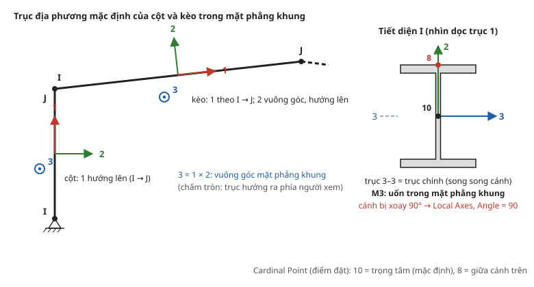

Bài 3.4. Trục địa phương, điểm đặt Local axes and insertion points
Trục địa phương quyết định trục nào là trục chính khi uốn; điểm đặt quyết định trục thanh nằm ở đâu so với tiết diện. Hai thông số này dễ sai mà khó thấy nếu không bật hiển thị.
- Kiểm tra và sửa trục địa phương 1-2-3 của cột, kèo.
- Hiểu tác dụng và giới hạn của Insertion Point (Cardinal Point).
1. Tình huống
Trong mô hình nhà xưởng Hòa Bình, cột vẽ trong mặt phẳng Y–Z nên trục 3–3 mặc định là trục chính. Một học viên vẽ thêm cột sườn tường trong mặt phẳng X–Z và thấy cánh bị xoay 90° khi bật Extrude. Học viên khác thử đặt Cardinal Point = 8 cho kèo để đỉnh kèo trùng cao trình mái.
2. Nội dung chính
Trục địa phương và điểm đặt tiết diện
- Trục địa phương (Local Axes): trục 1 dọc thanh từ I đến J; trục 2 mặc định nằm trong mặt phẳng thẳng đứng chứa thanh. Với cột và kèo trong mặt phẳng Y–Z, mặc định cho trục 3–3 là trục chính (uốn trong mặt phẳng khung). Kiểm tra bằng Display Options → Local Axes. Nếu cánh bị xoay 90° thì dùng Assign → Frame → Local Axes → Angle = 90.
- Điểm đặt (Insertion Point): mặc định là trọng tâm (10). Với kèo, có thể đặt Cardinal Point = 8 (giữa cánh trên) để đỉnh kèo trùng cao trình mái. Phải tích Transform frame stiffness for offsets. Khóa học giữ mặc định 10, cách này đơn giản và đủ chính xác.
- End Length Offsets: phần cứng tại nút kèo – cột (Chương 7).
3. Thực hành SAP2000
- Display Options → Local Axes: trục 1 đỏ, 2 xanh lá, 3 xanh dương.
- Cánh sai hướng: Assign → Frame → Local Axes → Angle = 90.
- Muốn đổi điểm đặt: Assign → Frame → Insertion Point, chọn Cardinal Point, tích Transform frame stiffness for offsets.

4. Lỗi thường gặp
- Đổi Cardinal Point mà không tích Transform frame stiffness for offsets: nội lực tính như chưa lệch tâm.
- Không bật Local Axes khi kiểm tra: cột uốn quanh trục yếu mà không biết.
5. Luyện tập
Điểm đặt tiết diện (Cardinal Point) mặc định trong SAP2000 là:
Gợi ý
Xem mục "Điểm đặt".
Lời giải
Mặc định là 10 – trọng tâm; khóa học giữ nguyên.
Kèo H500×250×8×12 đổi Cardinal Point từ 10 sang 8 (giữa mép trên). Trục thanh dịch đi bao nhiêu so với trọng tâm?
Gợi ý
Tiết diện đối xứng: trọng tâm ở giữa chiều cao.
Lời giải
Khoảng cách trọng tâm – mép trên $= h/2 = 500/2 = 250$ mm.
Đoạn kèo H(650-400)x200x6x10 dùng Cardinal Point = 8. Độ lệch giữa trục thanh và trọng tâm tiết diện ở hai đầu chênh nhau bao nhiêu? (Gợi ý tác hại: trục trọng tâm của đoạn kèo không còn song song với trục thanh.)
Gợi ý
Độ lệch mỗi đầu bằng $h/2$.
Lời giải
Đầu lớn: $650/2 = 325$ mm; đầu nhỏ: $400/2 = 200$ mm; chênh $325 - 200 = 125$ mm.
- Trục 1 từ I đến J; cột, kèo trong mặt phẳng Y–Z có trục 3–3 là trục chính.
- Cánh sai hướng: Local Axes → Angle = 90.
- Cardinal Point mặc định 10; đổi thì phải tích Transform frame stiffness for offsets.